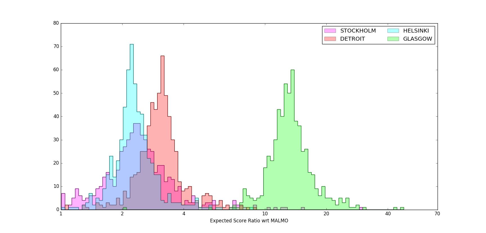

European Smackdown - the Statistics
Crime City Rollers' European Smackdown wasn't just a history-making event, bringing WFTDA-sanctioned Division 1 derby to mainland Europe, it was also our first chance to get a look at how those Division 1 teams have changed as the new season starts.
As we mentioned in a previous article, despite the fact that Euro Smackdown wasn't a true tournament (it was more of an invitational, with teams playing different numbers of bouts, and no attempt at ranking them by performance), the fact that it produced a large number of match-ups means that we can use Bayesian inference techniques to infer what the actual relative power of the participating teams are.
To start off, lets look at the actual results (versus the predictions from FlatTrackStats). We don't consider WFTDA Rankings because the ranking scheme that WFTDA uses combines Team Strength with Strength of Schedule (how many "hard" opponents you played), and so does not purely reflect the actual relative strength of teams.
| Bout | Score(HT) | Score(FT) | Score Ratio (HT) FT | FTS Predicted Score Ratio |
| London:Detroit | 146:47 | 345:79 | (3.1) 4.3 | 6.6 |
| Glasgow:Malmö | 39:257 | 46:536 | (0.15) 0.09 | 0.65 |
| London:Stockholm | 133:31 | 295:49 | (4.2) 6.0 | 4.9 |
| Glasgow:Helsinki | 43:212 | 73:485 | (0.20) 0.31 | 0.85 |
| Detroit:Malmö | 37:130 | 75:233 | (0.28) 0.32 | 0.875 |
| DAY 2 | ||||
| London:Glasgow | 322:3 | 526:9 | (100) 58 | 7.8 |
| Malmö:Helsinki | 79:36 | 176:70 | (2.2) 2.5 | 1.4 |
| Glasgow:Stockholm | 27:182 | 66:371 | (0.15) 0.18 | 0.59 |
| Detroit:Helsinki | 94:73 | 162:216 | (1.3) 0.75 | 1.1 |
| London:Malmö
(notsanctioned) |
194:33 | 311:98 | (5.9) 3.2 | 5.4 |
Another thing we can see is which games were "games of two halves" - the Detroit/Helsinki, Glasgow/London and London/Malmö games all exhibit very strong shifts between the scores at half-time and full-time - in fact, by almost 50%!
Now, onto the actual strength calculations!
We ran 300000 steps of a Bayesian Monte-Carlo simulation on the Euro Smackdown data, with 600 "walkers" per step. This allows us to explore the space of "possible strengths" and determine what the most likely strengths are for each Team competing.
As London Roller Girls were overwhelmingly likely to be the strongest team in the tournament, we calculate strengths for the remaining 5 teams relative to London. Strength here is "how many points London would score, in an average game, for every point the team scored". We use FTS ratings as a basis for our comparisons, as WFTDA rankings do not purely reflect the strength of teams.
 Plot of predicted and inferred Team Strengths (relative to London Roller Girls). Strengths are "approximate number of points London would score, for every point the Team scores")
Plot of predicted and inferred Team Strengths (relative to London Roller Girls). Strengths are "approximate number of points London would score, for every point the Team scores")
This graph shows two sets of data.
The vertical lines indicate how strong FlatTrackStats thought the teams should be, relative to London Roller Girls, before the tournament starts. As FlatTrackStats's ranking algorithm is relatively conservative, this approximates to the performance of the teams at the end of last year.
The histograms show the distribution of "consistent" team strengths, inferred from the results of European Smackdown. The peaks of the distributions correspond to the most likely strengths for each team.
As can be seen, there's two pretty obvious outliers - Crime City Rollers (marked as "Malmo") are significantly stronger than FTS thought they should be; and Glasgow Roller Derby are significantly weaker. The other three teams, Detroit, Helsinki and Stockholm are bunched close enough together that it's hard to separate them in this scale.
We can get a better look at the grouping for lower strength teams if we exclude the London bouts from consideration. One issue with London's strength is that its opponents score lower, meaning that each point is "worth" more in terms of altering their proportional strength. (The difference between a final score of 3 and 4 is a 33% change in your strength!) This makes predictions a bit more fuzzy.
 Inferred strengths for Detroit, Stockholm, Helsinki, Glasgow with respect to Crime City (as Malmo).
The above graph is calculated in the same way, but from only the bouts not involving London (and therefore shows strength relative to Crime City, as MALMO). It's a little clearer from this analysis that Detroit is measurably distinct in strength from Stockholm and Helsinki, and Stockholm and Helsinki are almost separable themselves.
Another interesting feature of the full analysis, is that, while the outliers are both "far" from their predictions, the set of all strengths is still relatively symmetrically distributed around FTS's predictions. This implies that London themselves haven't significantly altered in strength over the winter - any large shifts in the teams relative to them are due to those teams own strength changing.
The results of this analysis suggest that either Crime City Rollers had a significant home-teams advantage, or they're significantly improved (by about 50%) after taking a break over Winter. If the latter is the case, we expect them to be a significant force in Division 1 this year - this performance puts them closer to teams like Montreal or Atlanta!
Meanwhile, Glasgow's performance this year seems to have been hit by the departure of several strong pivots from the A-Team Roster, with Mona Rampage, (The Very Hungry) Splat(erkiller), and Jen Sykes all missing from the roster. Conservatively, their performance here is roughly 1/6th as strong as they evidenced in Division 1 tournament in the USA last year. Hopefully, this is simply a consequence of the restructuring early in the season, and the new roster will continue to strengthen and gel over the coming year...
Of the other teams, Stockholm have slightly fallen back from their high-point last year, possibly following the departure of one of their star jammers, Mad Malooney. (It's tempting to suggest that the slight increase in performance by Helsinki is related, partly, to their gaining the same skater!)
A recap of the tournament is available from Derby Central.